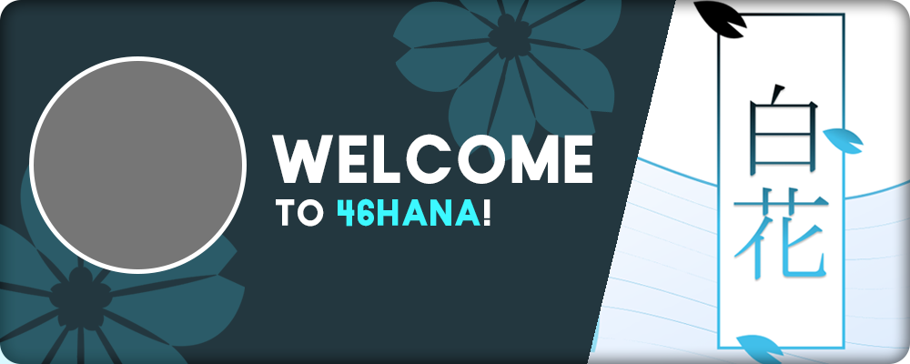

Discord Server Rework
Published on 29 October 2023 Information
We have finally finished the rework of our Discord server for anime and Visual Novel fans, especially those following our projects. With this endeavour, we’ve extended it to creatives in general, as well as people looking to improve themselves.
However, the theme change is not the only new addition - there is much more. In this article, I’ll go over all those features.

Theme change
Previously, our server’s theme was Shinto shrine, related to our team’s mascot Hanazawa Aoi who is a shrine priestess. We have decided to phase that theme out and replace it with something more broad - a place for artists, writers, creators, and more. This ties with the themes of Spring Poems - our WIP Visual Novel project - perfectly. Its protagonist is an aspiring artist who ends up going through a journey full of struggle where he must overcome his hurdles and overcome himself - to become his best self.
Our goal with the theme was to connect self-improvement with anime and VNs to create a niche that hasn’t been touched as much as the two separately. I’m also working on my own YouTube channel with those same ideas as the foundation, which adds consistency to all areas of my work and the work of our Visual Novel team. Here’s how this was accomplished:
Creative Workshop
Creative workshop is an area in our server targeted towards creatives. It spans two channels:
- Creative workshop - includes information about creative contests we host, such as art, writing, poetry, and weekly prompts. There are also discussion threads for theoretical talks about different fields - art, writing, music, graphic design, even programming and Visual Novel development.
- Creations - a place to actually share your WIPs and finished works of any kind, as well as fanarts of our characters. If you’re a creator, we warmly encourage you to join and share your amazing work!
Clarity Corner
This area refers to the self-improvement part of the server. It has three channels:
- Clarity corner - a similar channel to creative workshop that stores information about productivity related events we host, as well as discussion threads for productivity, studying, exercise, meditation, fashion, and learning Japanese. It also includes our productivity/creation courses, which are currently work in progress.
- Genius library - a forum channel where some of the team members and I will post tips and guides for fields covered and extended by our courses. These posts will be more surface level, but still useful for people interested in writing, VN development, bot development, and staying productive.
- Mastery ranking - lists people who participate in productive events and challenges the most via Mastery, a simple point system. Role and other rewards are expected for the top scorers.
New face
Rather than keeping our mascot Aoi as the server icon, we changed her to Satoshi, the protagonist of Spring Poems. He is now the face of the server as the icon and banner character, which you can see below. Big thanks to ven and zehnn for the incredible illustrations! Don’t worry though, Aoi still remains in some form - as the server’s custom bot! More about that in the next section.

New features
The above is only the tip of the iceberg from all the additions introduced in the rework. Let’s start with our custom bot.
Custom Bot
Aoi is a custom bot I created a year ago in the Discord.JS framework. It was meant to combine all the essential features of other bots into one, while also allowing us endless customisation for special events and features you won’t see anywhere else. Initially I used Airtable as the database for it, but recently realised the limitations and slow-downs associated with it, so I migrated the bot to MongoDB.
The bot is now fast and polished, offering a crazy number of modules: economy, shop, levels, moderation, events, tickets, announcements, fishing, custom perks, and more. I won’t go over everything in here, only the new features.
Economy
- Bank and rob system. Having coins in your bank ensures they won’t get robbed by anyone.
- New shop system where you can buy roles and items.
- Rewards - prizes from events and giveaways are given to you using this system instead of directly to your economy wallet.
- Monthly coins for Nitro boosters, donators, and people with level roles.
Customisation
Supporting us through boosts/donations or reaching specific level roles grants you some vanity perks - custom roles, reactions under messages where you are mentioned, bot responses when something is said in chat. All those are managed through the bot, no need for staff assistance!
Level system
We migrated the level system to our custom bot and introduced a few additions to it:
- Monthly and weekly leaderboard with rewards.
- Custom messages when a new level role is acquired.
- XP multipliers for supporters.
Welcomer
The server welcome messages now include original custom images and themes related to either the team or our projects. You can see them all right here - there are only 4 for now, with more to be added in the future.
The welcome messages also have call to action buttons underneath so that new members are immediately notified about ongoing events and giveaways in the server.
Teams
Do you like competing? Turns out our server offers a team system that provides that. The system has existed for long, but has recently received substantial changes.
The way it works now is that there are 4 teams that anyone can join (unless the team only allows whitelisted people) which then compete in the server events as well as special events just for the teams, some of which inspired by Classroom of the Elite, implemented via the custom bot. Each month, everyone who is a part of a team receives coin rewards based on how many points it has. In the future we plan to introduce an ability to create new teams.
Server
With bot features out of the way, let’s get to what changed in the server itself besides the theme.
Roles
- New special roles for events and activity.
- Updated level role perks that utilise economy and customisation features.
Channels
For a long time there was an issue with our channel structure - their abundance. For increased clarity and readability, we have reduced their number as much as possible and turned many of them into discussion threads, as mentioned in the previous sections. Furthermore, they have been reorganised and put into different categories.
There are also a few new channels:
- Regular polls - polls for active members where they can vote and discuss possible changes in the server. This is meant to give more voice to people who help build the community.
- Economy shop - a place to buy shop items as well as learn more about the economy system.
- About us - holds all the most important information about our Visual Novel team and our projects.
- Support us - information about ways to support us - through donations and boosts - and the perks that come with it. The funds will be used on nitro prizes, growing the server, and investing into our projects.
So, what are you waiting for? Join the server now and enjoy all the new features!